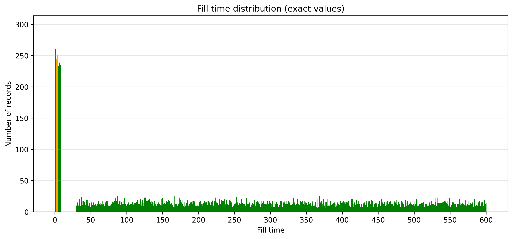
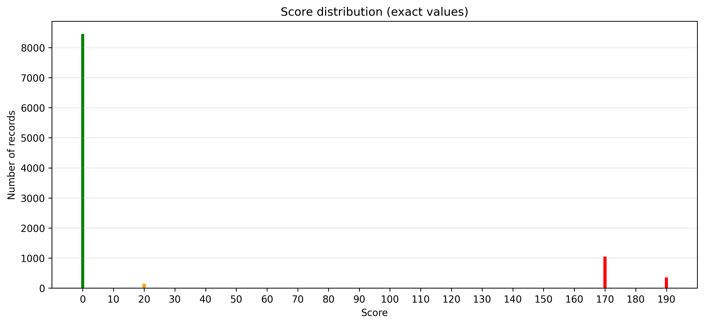
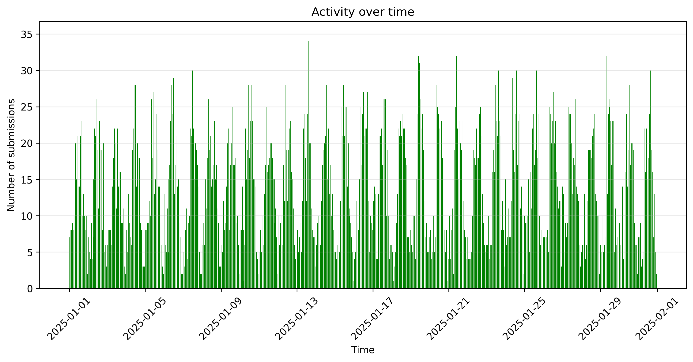
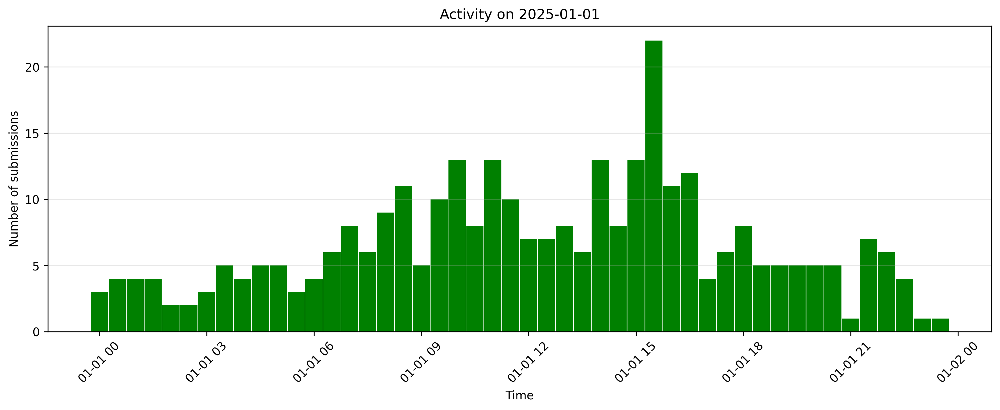

| File name | submissions.csv |
| Loaded records | 10000 |
| Unique IPs | 69 |
| Unique E-mails | 40 |
| Unique Countriess | 8 |
| Unique User Agents | 8 |
| Filled honneypots | 1400 |
| Period of analyzed time | 30 days |
Analyzed period of 30 days and 10000 records, loaded from submissions.csv file.

Click to zoom
The fill-time distribution is multimodal, indicating at least three distinct behavioral populations: automated submissions (<5s), fast interactions (5–10s), and normal user behavior (>30s). The presence of a stable peak around 5–10 seconds suggests legitimate rapid users rather than misclassified bots.

Click to zoom
The score distribution reveals two distinct high-risk clusters, suggesting the presence of at least two different spam strategies: low-effort automated submissions and more sophisticated adaptive bots attempting to mimic human behavior.

Click to zoom
The activity over time shows a highly irregular but continuous pattern of submissions, with no significant idle periods. Multiple recurring spikes (up to ~35 submissions per interval) suggest automated or semi-automated batch submissions rather than organic user behavior. The absence of clear daily or weekly human activity cycles indicates that a substantial portion of traffic is likely non-human. The pattern is consistent with distributed bot activity or scheduled spam campaigns operating at low but persistent intensity. Overall, the system is exposed to continuous background bot traffic with periodic bursts of higher intensity.

Click to zoom
| IP | Count | Country | Hostname | City | Region | Loc | Org | Postal | Timezone |
|---|---|---|---|---|---|---|---|---|---|
| 185.220.101.7 | 281 | DE | berlin01.tor-exit.artikel10.org | Berlin | State of Berlin | 52.5244,13.4105 | AS60729 Stiftung Erneuerbare Freiheit | 10119 | Europe/Berlin |
| 185.220.101.6 | 266 | DE | berlin01.tor-exit.artikel10.org | Berlin | State of Berlin | 52.5244,13.4105 | AS60729 Stiftung Erneuerbare Freiheit | 10119 | Europe/Berlin |
| 185.220.101.5 | 253 | DE | berlin01.tor-exit.artikel10.org | Berlin | State of Berlin | 52.5244,13.4105 | AS60729 Stiftung Erneuerbare Freiheit | 10119 | Europe/Berlin |
| 45.33.32.157 | 208 | US | Fremont | California | 37.5483,-121.9886 | AS63949 Akamai Connected Cloud | 94536 | America/Los_Angeles | |
| 198.199.88.1 | 199 | US | North Bergen | New Jersey | 40.8043,-74.0121 | AS14061 DigitalOcean, LLC | 07047 | America/New_York | |
| 45.33.32.156 | 193 | US | scanme.nmap.org | Fremont | California | 37.5483,-121.9886 | AS63949 Akamai Connected Cloud | 94536 | America/Los_Angeles |
There are 1,400 IP addresses with a high probability of spam activity. Blocking these IPs would reduce traffic by 14%.